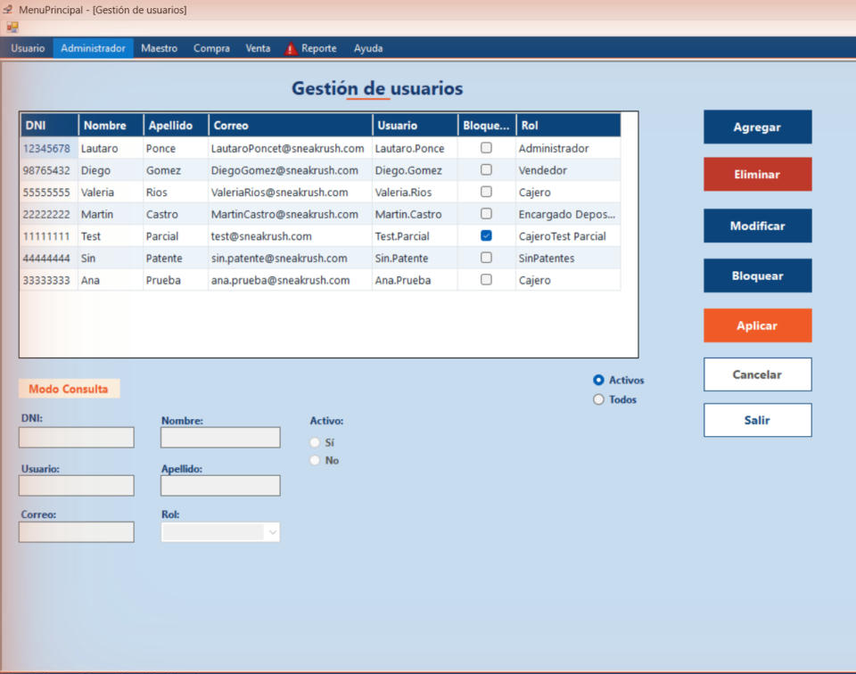

Inicio › Administrador › Gestión de usuarios
Gestión de usuarios
Acá se dan de alta, modifican, bloquean y eliminan los usuarios que pueden entrar al sistema.
Dónde está: Administrador › Gestión de usuariosLo usa: AdministradorAtajo: F1
Pasá el mouse por encima de cualquier botón o campo de la pantalla para ver qué hace.

Qué hace cada elemento
- 1Lista de usuariosMuestra a todos los usuarios con su DNI, nombre, apellido, correo, usuario, si están bloqueados y su rol. Hacé clic en una fila para elegir a quién querés modificar, eliminar o bloquear.
- 2Activos / TodosElegís qué ver en la lista: solo los usuarios activos o todos, incluidos los que están dados de baja.
- 3Modo actualTe avisa qué estás haciendo: Consulta, Añadir, Modificar, Eliminar, Bloquear o Desbloquear.
- 4Datos del usuarioDNI, nombre, apellido, usuario, correo y rol. Están bloqueados mientras solo estás mirando; se habilitan al tocar Agregar o Modificar.
- 5Activo (Sí / No)Indica si el usuario puede usar el sistema. Se completa con Sí al agregar y se cambia desde Modificar.
- 6AgregarLimpia los datos y los habilita para cargar un usuario nuevo. No se guarda hasta que toques Aplicar.
- 7EliminarPrepara el borrado del usuario elegido en la lista. Te pide confirmar al tocar Aplicar.
- 8ModificarHabilita los datos del usuario elegido para cambiarlos (nombre, apellido, correo, rol y si está activo).
- 9Bloquear / DesbloquearCambia de nombre según el usuario elegido: si está bloqueado dice Desbloquear, si no, Bloquear. Te pide confirmar al tocar Aplicar.
- 10AplicarConfirma lo que estás haciendo (agregar, modificar, eliminar, bloquear o desbloquear). Sin este paso no se guarda nada.
- 11CancelarDescarta lo que estabas haciendo y vuelve al modo Consulta sin guardar cambios.
- 12SalirCierra la pantalla.
Cómo hacerlo
Para dar de alta a una persona nueva.
- Tocá Agregar.
- Completá DNI, nombre, apellido, correo y elegí el rol. El usuario se escribe solo.
- Tocá Aplicar.
- Aparece un mensaje de confirmación: la contraseña temporal es el apellido seguido del DNI.
Tené en cuenta: El DNI debe tener 7 u 8 números. Ni el DNI, ni el usuario, ni el correo pueden estar repetidos.
Para corregir los datos de alguien o cambiar su rol.
- Hacé clic en la fila del usuario.
- Tocá Modificar: se cargan sus datos y se habilitan.
- Cambiá lo que necesites. Si querés que deje de usar el sistema sin borrarlo, marcá Activo: No.
- Tocá Aplicar.
Tené en cuenta: El DNI y el usuario quedan bloqueados. Tampoco podés desactivar tu propia cuenta.
Cuando alguien se bloqueó por errar la contraseña tres veces, o para impedir temporalmente su ingreso.
- Hacé clic en la fila del usuario.
- Tocá el botón de bloqueo: dice Desbloquear si está bloqueado o Bloquear si no.
- Confirmá la pregunta con Sí tras tocar Aplicar.
Tené en cuenta: La columna Bloqueado de la lista se actualiza sola.
Para borrar un usuario que ya no hace falta.
- Hacé clic en la fila del usuario.
- Tocá Eliminar y después Aplicar.
- Respondé Sí a la pregunta de confirmación.
Tené en cuenta: El usuario se elimina definitivamente. Si solo querés que no entre más, es mejor desactivarlo desde Modificar.
Para saber más
Mensajes que puede mostrar el sistema 11
| Mensaje | Qué significa y qué hacer |
|---|---|
| AvisoSeleccione un usuario para modificar. / para eliminar. / Seleccione un usuario de la grilla. | Primero hacé clic en una fila de la lista y después tocá el botón. |
| AvisoEl DNI es obligatorio. / El DNI debe tener 7 u 8 dígitos numéricos. | Escribí el DNI solo con números, sin puntos. |
| AvisoEl Nombre / Apellido / Login es obligatorio. | Completá el campo que falta. |
| AvisoEl Email no tiene un formato válido. | Revisá que tenga la forma nombre@dominio.com. |
| AvisoDebe seleccionar un Rol. | Elegí un rol en la lista desplegable. |
| AvisoEl DNI / nombre de usuario / correo ya se encuentra registrado. | Esos datos no se pueden repetir. Revisá si la persona ya existe en la lista (podés estar en Activos: probá con Todos). |
| ListoUsuario creado correctamente. La contraseña temporal es: Apellido + DNI | Pasale esa contraseña a la persona: el sistema le va a pedir que la cambie al ingresar por primera vez. |
| ListoUsuario modificado / eliminado / bloqueado / desbloqueado correctamente. | La operación terminó bien y la lista se actualizó. |
| Confirmación¿Está seguro que desea eliminar al usuario '…'? / ¿Desea bloquear (o desbloquear) al usuario '…'? | Sí continúa; No lo deja como estaba. |
| ErrorNo puede eliminar / bloquear / desactivar su propia cuenta mientras está en uso. | Pedile a otro administrador que lo haga. |
| ErrorOcurrió un error inesperado al agregar / modificar el usuario. / Ocurrió un error al eliminar, bloquear o desbloquear el usuario. | No se guardó nada. Probá otra vez y, si se repite, avisale a soporte. El detalle queda en la Bitácora de eventos. |
Reglas a tener en cuenta 6
- Todos los botones se habilitan según los permisos de tu rol: si falta alguno, es porque tu rol no lo tiene.
- El usuario (login) se arma solo con Nombre.Apellido y no se puede cambiar después.
- La contraseña temporal es Apellido + DNI; la persona debe cambiarla al ingresar.
- Un usuario se bloquea solo al errar la contraseña 3 veces. Acá lo podés desbloquear.
- Cada alta, modificación, eliminación, bloqueo y desbloqueo queda registrado en la Bitácora de eventos.
- Mientras Activos esté marcado, los usuarios dados de baja no aparecen: elegí Todos para verlos en rojo.
Temas relacionados
SneakRush · Ayuda del sistema · Gestión de usuarios. Podés abrir esta ayuda desde cualquier pantalla con la tecla F1.